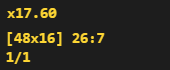
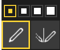

Jumping Alien Sprite in Piskel
Draw a one-eyed alien one pixel at a time, turn it into a 5-frame jump animation, and export a sprite sheet that is ready for Construct 3.
What you will build
A 32 × 32 alien that crouches, jumps, tucks its legs at the top, and lands. When the frames play in order, it looks like it jumps on the spot.

| Tool | What it is for | Link |
|---|---|---|
| Piskel | Drawing the frames and exporting the sprite sheet | piskelapp.com |
- Piskel is free and runs in the browser. Nothing needs installing and you do not need an account.
- The address is piskelapp.com, not piskel.com.
- The alien stays in about the same spot in every frame. That is on purpose: in a game, Construct 3 moves the sprite up and down. The frames only change its pose.
- Your alien does not have to match the pictures pixel for pixel. Change the colours or give it two eyes if you like, as long as you keep the 5 poses.
- Time: about one to two class periods.
- Click a part to open it. Opening one part closes the others. Tick every checkpoint box before you move on; your ticks are remembered on this computer.
Lesson brief
If you already know Piskel, follow the chart and you can finish from it alone. Click any box to jump to its full steps; the Back to the brief button brings you back here.
Part 1 · Open Piskel
Create Sprite
Settings › Misc: plain light background
Settings › Grid: on, thinnest, every pixel, pink
Part 2 · Draw frame 1: Stand
Copy the Stand grid
Body #5AC850 · Legs #287828
Antenna tips #FFD23C
Part 3 · Frames 2 to 5
Move down 3 · bent legs
Arms up · straight legs
Arms out
Arms out
Part 4 · Play the jump
Order: Stand, Crouch, Jump, Top, Land
Part 5 · Save and export
alien.piskel
Columns 5 · Rows 1 · Download
.piskel + .png
Each colour is one part. Codes like 2B mean Part 2, section B. Underlined words are links. Codes like #5AC850 are colours. Row and column numbers count from 0, the same as Piskel's yellow mouse counter and the picture grids.
Part 1 · Open Piskel
You start with an empty 32 × 32 canvas with a grid on it, so every pixel is easy to see.
| Where things are in Piskel | Location on screen |
|---|---|
| Tools (Pen, Paint bucket, Eraser, Move…) | Far left, two columns of icons |
| Colour squares (primary and secondary) | Far left, under the tools |
| Frames column and Add new frame button | Left side, between the tools and the canvas |
| Canvas (where you draw) | Middle of the screen |
| Preview window, its speed slider and the quick # grid button | Top-right corner. The # button stays hidden until you move the mouse to the top of the Preview window, under Create Sprite. |
| Settings (gear) and its Grid tab | Strip of icons on the far right edge. Background (Misc tab), grid colour and turning the grid on (Grid tab) are set here. |
| Mouse position (yellow numbers) | Bottom-right, under the Palettes panel. Shows column:row of the pixel under the mouse, counting from 0. |
| Resize, Save, Export, Import buttons | A strip of icons down the far right edge |
Hold your mouse over any icon and its name pops up. Piskel has no hidden panels to lose; if the screen looks squashed, make the browser window full screen.
1A · New sprite
- Go to piskelapp.com.
- Click Create Sprite. The editor opens with a blank canvas in the middle.
1B · Canvas size and grid
| Resize | Value |
|---|---|
| Width | 32 px |
| Height | 32 px |
- Click the Resize icon
 (top of the strip on the far right edge). A panel slides out showing Width and Height.
(top of the strip on the far right edge). A panel slides out showing Width and Height. - Check both say 32. This is Piskel's starting size, so you usually only need to check. If they are different, type 32 and 32 and click Resize. Click the Resize icon again to close the panel.
- Set up the grid first. Click the Settings icon
 (the gear in the strip on the far right edge). A panel slides out on the Misc tab. Beside Background, click the third square (plain light grey). The checkerboard behind your drawing looks like a grid of its own and hides the real grid lines, so a plain background makes them stand out.
(the gear in the strip on the far right edge). A panel slides out on the Misc tab. Beside Background, click the third square (plain light grey). The checkerboard behind your drawing looks like a grid of its own and hides the real grid lines, so a plain background makes them stand out. Now click the Grid tab and set:
Now click the Grid tab and set:Grid tab Setting Enable grid Ticked Grid size First square (thinnest lines) Grid spacing First square (a line around every pixel) Grid color Pink (bottom row, fourth square), or any bright colour that is not one of your alien's colours.  Thin lines appear on the canvas, one square per pixel. Click the gear again to close the panel.
Thin lines appear on the canvas, one square per pixel. Click the gear again to close the panel. - Quick on/off button. Once the grid is set up, you can hide or show it without opening Settings. Move your mouse to the top of the Preview window (top-right corner, just under the Create Sprite button). Three small buttons appear. They stay hidden until the mouse is over them.
 The middle one, #, turns the grid off and on. Click it twice to try it, and leave the grid on.
The middle one, #, turns the grid off and on. Click it twice to try it, and leave the grid on.
Part 2 · Draw frame 1: Stand
Copy the Stand picture square by square. The numbers along the top and side count the pixels from 0, so you can find your place.


| Part of the alien | Colour code |
|---|---|
| Outline | #193C19 (very dark green) |
| Head, body, arms | #5AC850 (green) |
| Legs | #287828 (darker green) |
| Eye | #FFFFFF (white) |
| Pupil | #14141E (almost black) |
| Antenna tips | #FFD23C (yellow) |
How to pick a colour: click the big primary colour square (far left, under the tools). It starts black. The checkered square behind it is the secondary colour (see-through to start), and the curved arrow swaps the two. A colour chooser opens.
A colour chooser opens. Click in the text box at the bottom (it shows #000000 at first), delete what is there, type the colour code (or click any code on this page to copy it, then paste with Ctrl+V) (for example #193C19) and press Enter, then click back on the canvas to close the chooser. The primary square changes to that colour. The primary colour paints with the left mouse button.
Click in the text box at the bottom (it shows #000000 at first), delete what is there, type the colour code (or click any code on this page to copy it, then paste with Ctrl+V) (for example #193C19) and press Enter, then click back on the canvas to close the chooser. The primary square changes to that colour. The primary colour paints with the left mouse button.
Tip: the eyedropper just above the colour squares copies a colour already on your canvas. Click the eyedropper, then click a pixel, and the primary square changes to that colour. It is handy for going back to a colour you used earlier.
2A · Outline
- Choose the Pen tool
 (far left, top of the tools). Above the tools, check the Pen size is the smallest square (1 pixel). The one in use has a yellow outline.
(far left, top of the tools). Above the tools, check the Pen size is the smallest square (1 pixel). The one in use has a yellow outline.
- Pick the outline colour #193C19.
- Click once on a square of the canvas. One pixel turns dark green. Draw all the dark outline squares from the picture: the head circle, the eye ring, the body, the two antenna stalks and the feet.
- Made a mistake? Right-click a pixel to erase it. (The right mouse button paints with the secondary colour, which starts as see-through.) You can also press Ctrl+Z to undo.
2B · Fill the colours
- Pick the green #5AC850 and choose the Paint bucket tool
 (the tipping paint can).
(the tipping paint can). - Click inside the head. All the empty pixels inside the outline turn green. Do the same inside the body.
- If the green spills out over the whole background, there is a gap in your outline. Press Ctrl+Z, find the gap, and close it with the Pen.
- Use the Pen with #5AC850 for the arms, then #287828 for the legs.
2C · Eye and antennae
- With the Paint bucket and #FFFFFF, click inside the eye ring. The eye turns white.
- With the Pen and #14141E, draw the 2 × 2 pupil in the middle of the eye.
- With the Pen and #FFD23C, draw the two 2 × 2 yellow tips on the antennae.
Part 3 · Frames 2 to 5
You never start a frame from blank. Each new frame is a copy of one you already drew, then you change only the parts that move.
How to duplicate a frame: in the Frames column (left side, between the tools and the canvas), hold your mouse over the frame. Small icons appear in its corners:
- Bottom-right, Duplicate (two overlapping pages): makes a copy.
- Bottom-left, move handle
 (four-way arrow): drag it up or down to change the frame order.
(four-way arrow): drag it up or down to change the frame order. - Top-right, bin: deletes the frame.
Click the Duplicate icon . A copy appears just below it and opens on the canvas.
3A · Frame 2: Crouch

- Duplicate frame 1. Frame 2 appears and opens on the canvas.
- Choose the Move tool (the four-way arrow) and drag the drawing down 3 squares. The whole alien slides down; the feet go off the bottom edge for now.
- Erase the old straight legs (right-click with the Pen) and draw bent legs spreading out to the sides, with the feet on row 30, as in the picture.
- Erase the arms and draw them a little shorter, so the hands stop at row 25, just above the bent legs.
- The head is squashed in the picture: its top is 2 rows lower and the antennae are shorter, with the yellow tips on rows 9 and 10. Redraw the top of the head and the antennae to match if you want the full squash.
3B · Frame 3: Jump

- Duplicate frame 1 (Stand), not Crouch. Hold the mouse over frame 1 and click Duplicate (bottom-right corner). The copy appears below frame 1.
- Hold the mouse over the new frame and drag it by its move handle (bottom-left corner) to just below frame 2. The order should be Stand, Crouch, Jump.
- Change the drawing to match the Jump picture: arms up in a V, legs long and straight close together, and the head a row taller (stretched).
3C · Frame 4: Top

- Duplicate frame 3. Frame 4 appears below it.
- Erase the long legs and draw short tucked legs right under the body.
- Erase the raised arms and draw arms straight out to the sides on row 18, with the hands turned up on row 17.
- The head is back to its normal Stand height (not stretched). Match the picture.
3D · Frame 5: Land

- Duplicate frame 2 (Crouch) and drag the copy by its move handle to the bottom of the list, below frame 4.
- Erase the arms and draw them straight out to the sides on row 22, with the hands turned up on row 21, like frame 4. This is the alien catching its balance.
Part 4 · Play the jump
The Preview window (top-right corner) plays all your frames in order, over and over.
| Preview | Value |
|---|---|
| Speed | 8 FPS (frames per second) |
- Look at the Preview window. The alien is already jumping, probably too fast.
- Drag the slider under the Preview window until the number beside it reads 8 FPS. The jump slows down.
- Watch it loop a few times. If one frame jerks or a part jumps sideways, click that frame in the Frames column and fix it. The preview updates as you draw.
Part 5 · Save and export
You make two files: a .piskel file so you can keep editing later, and a sprite sheet PNG, which is all 5 frames side by side in one picture, ready for a game.
5A · Save your work
- Click the Save icon
 (strip on the far right edge, under Resize). A panel slides out.
(strip on the far right edge, under Resize). A panel slides out. - Type alien in Title.
- Under Save offline as file, click the yellow Save as .piskel button. A file called alien.piskel downloads (check your Downloads folder).
5B · Export the sprite sheet
| Export → PNG | Value |
|---|---|
| Scale | 1 (leave it) |
| Columns | 5 |
| Rows | 1 |
- Click the Export icon
 (far right edge, under Save). A panel slides out with tabs along the top: GIF, PNG, Zip, Others.
(far right edge, under Save). A panel slides out with tabs along the top: GIF, PNG, Zip, Others. - Click the PNG tab.
- Set Columns to 5 and Rows to 1, so all frames sit in one row.
- Under Spritesheet file export, click Download. A PNG downloads. Open it: you see your 5 alien poses side by side, 160 pixels wide and 32 tall.
5C · Hand in
- Upload alien.piskel and the sprite sheet PNG to Google Classroom (classroom.google.com).
- Next: in Construct 3 (editor.construct.net), the sprite sheet comes in as one sprite with a 5-frame animation (right-click the animation's frames → Import frames → From sprite strip, 5 horizontal cells, 1 vertical). To make it the player in a game, follow Construct 3 Lesson 1: Jump and Fall with Outside Assets.